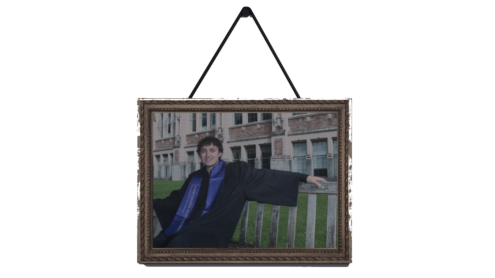

Seattle, WA / About
Jack Strickland
I am a designer, engineer, animator, and filmmaker. I graduated from the University of Washington in June 2026 with a BS in Human Centered Design & Engineering and a minor in Digital Experimental Arts.
Thank you for asking,
I work between cinematic mixed media animation, computer graphics, interaction design, and physical prototyping. I am most interested in projects where visual language, technical systems, and story all have to support one another.
My practice moves across Blender, Unreal Engine, Autodesk Inventor, product design, user research, film editing, and hands-on fabrication. I like building things that can be experienced, tested, watched, and understood.
I love animation because it gives limitless art forms the chance to be displayed on the newest possible canvases.
Animation is where my interests converge: cinematography, performance, lighting, spatial design, software, engineering, sound, and editing. I am drawn to work that feels cinematic but still experimental, mixing 3D, live-action thinking, graphic systems, and computer-generated worlds.
I care about computer graphics not just as software output, but as a way to design atmosphere, movement, structure, and emotion.
Selected experience.
- 3D Innovations Intern - professional experience in 3D workflows, modeling, prototyping, and applied digital production.
- Posy Social - product and UI/UX design experience on a dating app concept focused on personality matching and date recommendations.
- HCDE coursework - user research, visual communication, physical computing, product design, and human-centered design methods.
- Teaching modeling and animation - I enjoy helping kids learn 3D modeling and animation because it makes technical tools feel imaginative, playful, and approachable.
Current capstone.
The Shape of Circularity brings together my interests in design research, spatial systems, 3D modeling, and cinematic presentation. For Seattle REconomy, my team designed a ReUse Commons that organizes reuse, repair, donation intake, education, a tool library, a bike shack, a woodshop, and makerspace activity across more than 9,000 RSF.
The project became a complete research-to-rendering pipeline: field observation, stakeholder interviews, co-design workshops, physical usability testing, floor-plan development, and Blender visualization.
View The Shape of Circularity →Accolades and highlights.
- Science and Engineering Apprenticeship Program Recipient (2022) - selected for the SEAP federal internship at Puget Sound Naval Shipyard & IMF.
- Naval Research Enterprise Internship Program Recipient (2023, 2024) - selected for the competitive federal internship program at Puget Sound Naval Shipyard & IMF.
- SkillsUSA WA State — 3D Visualization & Animation, First Place Gold (2021, 2022) - placed first at state two consecutive years, competed at nationals both years.
- SkillsUSA WA State — Engineering Technology Design, Second Place (2021) - led a fire-seeking sprinkler prototype project, placed second at state.
- University of Washington HCDE - studied in a program focused on human-centered systems, research, design, and technology.
- Digital Experimental Arts minor - expanding my work through experimental media, visual culture, and computational art practices.
Tools and mediums.
Professional experience in: Python, Unreal Engine, FARO Scene, Inventor, AutoCAD, Blender, Reality Capture, GitHub.
Proficient in: Adobe Creative Cloud, Java, 3DS Max/Maya, DaVinci Resolve, SolidWorks.
For inquiries or collaboration.
I am open to design, creative technology, animation, 3D production, product, and internship opportunities. I am also always interested in meeting artists, engineers, filmmakers, educators, and people building thoughtful tools or stories.
Connect on LinkedIn →